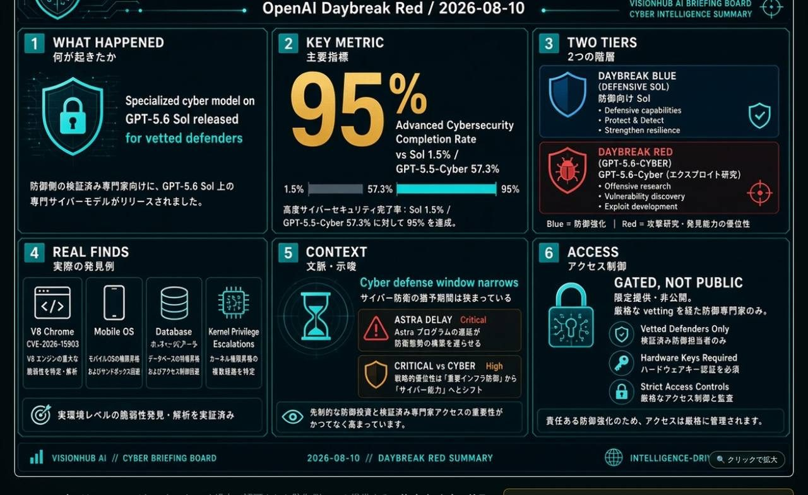

ONE-BOARD SUMMARY
1枚で見る GPT-5.6-Cyber

🔍 クリックで拡大GPT-5.6-Cyberは、OpenAI が Daybreak Red 経由で認可された防御側にのみ提供する、サイバーセキュリティ特化のフロンティア派生モデルである。Eric Wallace 氏は「高度なサイバータスク（exploit 開発など）の能力を直接改善する初の大規模な試み」と位置づけた。
- 対象は一般公開ではなく、認可された防御側・パートナーに限定
- 能力評価は Preparedness Framework 上 High（Critical 未満）。Critical 懸念で一部停止した Astra とは別物
- 内部利用で V8 など実ゼロデイを発見し、協調的開示（CVE-2026-15903 等）まで到達
DIFFERENCES FROM EXISTING
既存の類似製品と何が違うポイントか
「サイバーができるフロンティアモデル」は既にある。違いは能力の直接強化と拒否率の設計、そして誰に渡すかの制度設計にある。
従来・類似一般フロンティア / 前世代 Cyber
- GPT-5.6 Sol：能力は高いがセーフガードが強く、高度デュアルユースはほぼ拒否（完了率 ~1.5%）
- GPT-5.5-Cyber：拒否低減は進んだが完了率 57.3% で研究者から不満
- Anthropic Mythos 等：ExploitBench で競合するが、アクセス方針・拒否設計が異なる
- 自律ペンテスト製品：用途特化だが、フロンティア LLM 基盤そのものではない
GPT-5.6-Cyber能力強化 × 拒否低減 × ゲート
- Sol 上にゼロデイ発見・exploit chain 向け特化訓練
- 高度サイバー完了率 95%（前世代比 +37.7pt）
- ExploitGym で Sol・5.5-Cyber を上回る（公式）
- Daybreak Red 限定。身元確認・監視・法的同意・HWキー義務
- 内部で実ゼロデイ発見 → 協調的開示の実績付き
| 観点 | GPT-5.6 Sol（通常） | Daybreak Blue | GPT-5.6-Cyber（Red） |
|---|---|---|---|
| 高度サイバー完了率 | 1.5% | 2.0% | 95.0% |
| 主用途 | 汎用フロンティア | 防御（発見・レビュー・IR） | 高度研究・exploit 検証 |
| 拒否設計 | 強ガード | 防御向けに緩和 | デュアルユース特化で大幅緩和 |
| アクセス | 一般 / 企業 | 認可防御側 | 厳格な認可防御側のみ |
最大の差別化は「許可を緩めただけ」ではなく、exploit 開発そのものに大規模に能力を振り向けた初の試みである点と、実世界のゼロデイ発見実績が伴っている点だ。
RECENCY
最近出た新しい製品か？
はい。極めて新しい。
- 正式発表：2026年8月10日（OpenAI 公式ブログ + Eric Wallace X 投稿）
- 本スライド日付：2026年8月11日 — 発表から約1日
- ベースモデル：GPT-5.6 Sol（2026年6月頃の限定プレビュー→一般化）からの特化派生
- 前世代：GPT-5.5-Cyber は Daybreak 初期で先行提供。拒否率へのフィードバックを受けた後継
- 関連イベント：2026-08-07 前後に Astra の Critical サイバー懸念で開発一部停止 → その約3日後に本モデル
公開当日に Axios / VentureBeat / The Decoder 等が速報。システムカードの詳細版は後日公開予定とされる。Daybreak パートナー（CrowdStrike、Cisco、Palo Alto Networks、Accenture、IBM 等）への組み込み拡大も同時に語られている。
DAYBREAK BLUE / RED
2ティア構造：誰に何を渡すか
Daybreak は OpenAI の Trusted Access for Cyber プログラム。今回 Blue と Red に分割された。
DAYBREAK BLUEほとんどの防御チームの出発点
- モデル：GPT-5.6 Sol（ガードを防御用途向けに調整）
- 用途：脆弱性発見、セキュアコードレビュー、マルウェア解析、インシデント対応、パッチ検証
- 高度デュアルユースはまだ拒否されやすい（完了率 ~2%）
- API alias 例：gpt-daybreak-blue → gpt-5.6-sol
DAYBREAK RED高度研究・レッドチーム向け
- モデル：GPT-5.6-Cyber ほか目的特化モデル
- 用途：認可された脆弱性研究、exploit 検証、セキュリティテスト
- 拒否を大幅に下げ、exploit chain 等に対応
- API alias 例：gpt-daybreak-red → gpt-5.6-cyber
- 別途の厳格な適格審査が必要
個人アカウントは 2026年9月1日からハードウェアセキュリティキー義務。Codex では Auto-Review モードを推奨。
重要：これは「公開リリース」ではない。認可された防御側・パートナーに限られる。小規模チームや個人開発者は原則対象外に近い。
REAL-WORLD RESULTS
ベンチマークと実ゼロデイ発見
内部ベンチマーク（公式）
- Advanced Cybersecurity Completion Rate：95.0%（exploit chain・認証バイパス・権限昇格など）。Sol 1.5% / Blue 2.0% / 5.5-Cyber 57.3%。
- ExploitGym：既知脆弱性を動作する exploit に変える評価で、Sol および 5.5-Cyber を上回る。
- ゼロデイ内部評価：深刻度・影響・校正・PoC 品質で Sol（Blue）を上回る。
- 一方、脆弱性レポートの詳細さでは Sol が優れる場合あり。ExploitBench 標準 300 ターンでは Sol がトークン効率で優位なケースも。
実世界の成果（OpenAI 内部利用）
- Chrome V8：未知脆弱性 2 件。チェーンでメモリ破壊＋ヒープサンドボックス脱出。Google へ協調的開示 → CVE-2026-15903
- 人気モバイル OS：最低 5 件（非信頼アプリ → 管理者権限のチェーン含む）
- 人気データベース：クリティカル 3 件（リモートコード実行パス含む）
- 人気 OS カーネル：権限昇格系が 400 件超（開示進行中・名称非公開）
STRATEGIC CONTEXT
「防御の窓が狭まる」——Astra 遅延と同週の一手
公式ブログのタイトルは Expanding Daybreak as the Cyber Defense Window Narrows。脅威アクターが AI で攻撃を高速・大規模化（将来的には自律型を含む）する前提で、防御側に先にフロンティアを渡す。
同週：ASTRACritical を否定できず一部停止
- 2026-08-07 前後の発表
- 内部評価で Critical サイバー能力を否定できない
- Critical＝人間なしで hardened 実システムへの全深刻度ゼロデイ、または高レベル目標からの E2E 攻撃
- 開発の一部を停止・隔離強化
同週：GPT-5.6-CYBERHigh をゲート付きで防御側へ
- 2026-08-10 発表
- High 止まり（Critical 未満）
- Daybreak Red で認可防御側のみ
- 拒否低減＋特化訓練で実務加速
- Hugging Face 関連事案には関与なしと明言
同じ週に、「危険すぎるものは止める」と「防御側には拒否の少ない強力ツールを渡す」が並走している。これは矛盾ではなく、能力閾値に応じた配布・停止の二刀流として読める。
リスク：ゲートが破られればデュアルユース能力が漏れる。OpenAI は監視強化、Auto-Review、HWキー、サンドボックス推奨、用途制限で対応するが、完全な保証ではない。システムカードの詳細公開が次の検証ポイント。
誰にとって価値があるか：企業レッドチーム、認可された脆弱性研究者、セキュリティベンダー（製品への組み込み）、大規模 OSS / インフラを守る防御チーム。一般アプリ開発者・個人の学習用途にはアクセス権がなく価値は限定的。
THE BOTTOM LINE
これは「最強のハッキング AI が一般公開された」ニュースではない。AI ラボが、攻撃側が本格化する前に信頼された防御側へ高度能力を先に渡す配布戦略を制度化したニュースである。
2026-08-11 — AI Intelligence Hub / Day Slide